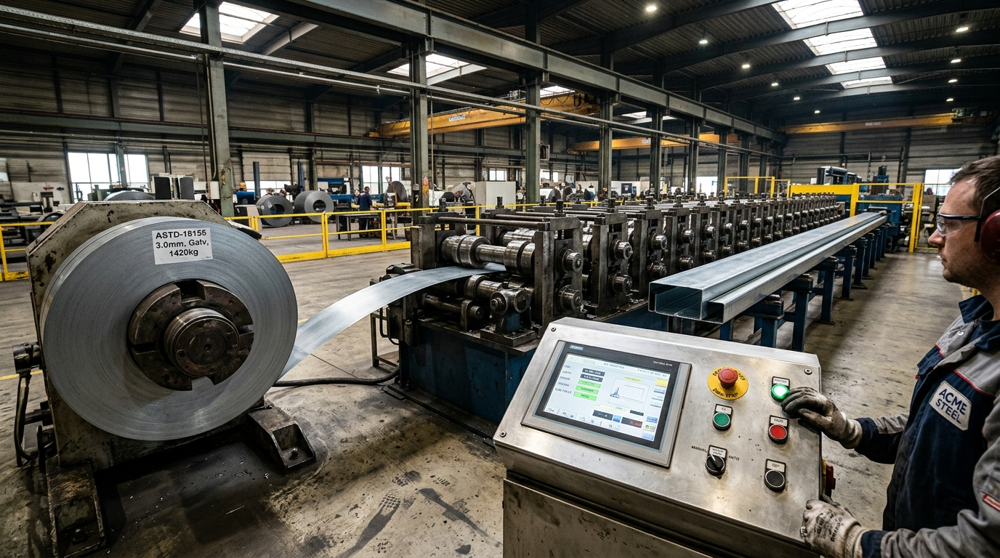

INDUSTRIAL IOT & OT INTEGRATION
PLC & Machine Telemetry Without Disruption.
Connect cold roll-forming lines, punch presses, and robotic cells using Modbus TCP, OPC-UA, and MQTT without interrupting existing PLC ladder logic.

EDGE TELEMETRY CONSOLE
Live Machine Sensor Feeds
Raw industrial events translated into operational intelligence: cycle counts, stroke speed, bearing acoustic vibration, and hydraulic oil temperatures.
01 / LIVE CYCLE COUNTS
[10:38:12] PLC_RF1_STROKE: 14821
[10:38:14] PROFILE_LEN_M: +3.204
[10:38:16] SHEAR_PUNCH_ACK: OK (0.18s)
[10:38:18] PART_ID: UP-90-18-B24 #892
[10:38:20] LINE_SPEED: 42.1 m/min
[10:38:22] MOTOR_AMPS: 28.4 A (NORM)
[10:38:24] ENCODER_DELTA: +0.02 mm
[10:38:26] BUNDLE_COUNT: 24/25 PCS
02 / PREDICTIVE HEALTH
[SYS] BEARING_VIB_RMS: 0.14 mm/s
[SYS] GEARBOX_OIL_TEMP: 48.2°C
[SYS] HYD_PRESSURE: 185 BAR (STABLE)
[SYS] ROLL_GAP_ALIGN: 1.81 mm
[SYS] THERMAL_DRIFT: 0.003 mm
[SYS] PUNCH_DIE_WEAR: 12.4% (GOOD)
[SYS] LUBRICATION_FLOW: 1.4 L/min
[SYS] EST_MAINTENANCE_DUE: 184 HRS
03 / EVENT SYNTHESIS
[EVENT] Coil changeover logged (8.2 min)
[CORRELATION] Tied to ERP Coil #JSW-8912
[CHECK] Thickness 1.80mm matches Tekla spec
[ALERT] Speed reduced 5% for hole slotting
[DISPATCH] Batch #01 completion est 16:45
[AI SYNTHESIS] Zero variance against schedule
[AUDIT] Log signed by Edge Agent #04
Air-Gapped OT Network Protection
ProRack AI edge relays run on isolated plant networks with outbound-only TLS 1.3 connectivity. No external inbound connections are permitted to factory PLC controllers or machine safety networks.